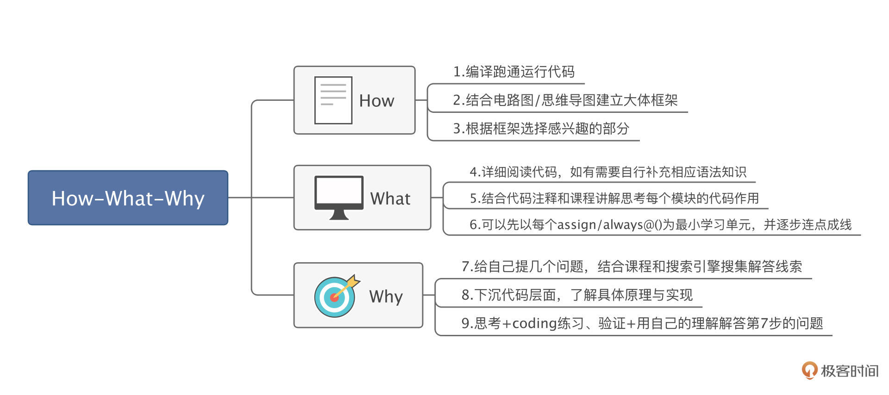

- 00 开篇词 练好基本功，优秀工程师成长第一步.md
- 01 CISC & RISC：从何而来，何至于此.md
- 02 RISC特性与发展：RISC-V凭什么成为“半导体行业的Linux”？.md
- 03 硬件语言筑基（一）：从硬件语言开启手写CPU之旅.md
- 04 硬件语言筑基（二）_ 代码是怎么生成具体电路的？.md
- 05 指令架构：RISC-V在CPU设计上到底有哪些优势？.md
- 06 手写CPU（一）：迷你CPU架构设计与取指令实现.md
- 07 手写CPU（二）：如何实现指令译码模块？.md
- 08 手写CPU（三）：如何实现指令执行模块？.md
- 09 手写CPU（四）：如何实现CPU流水线的访存阶段？.md
- 10 手写CPU（五）：CPU流水线的写回模块如何实现？.md
- 11 手写CPU（六）：如何让我们的CPU跑起来？.md
- 12 QEMU：支持RISC-V的QEMU如何构建？.md
- 13 小试牛刀：跑通RISC-V平台的Hello World程序.md
- 14 走进C语言：高级语言怎样抽象执行逻辑？.md
- 15 C与汇编：揭秘C语言编译器的“搬砖”日常.md
- 16 RISC-V指令精讲（一）：算术指令实现与调试.md
- 17 RISC-V指令精讲（二）：算术指令实现与调试.md
- 18 RISC-V指令精讲（三）：跳转指令实现与调试.md
- 19 RISC-V指令精讲（四）：跳转指令实现与调试.md
- 20 RISC-V指令精讲（五）：原子指令实现与调试.md
- 21 RISC-V指令精讲（六）：加载指令实现与调试.md
- 22 RISC-V指令精讲（七）：访存指令实现与调试.md
- 23 内存地址空间：程序中地址的三种产生方式.md
- 24 虚实结合：虚拟内存和物理内存.md
- 25 堆&栈：堆与栈的区别和应用.md
- 26 延迟分配：提高内存利用率的三种机制.md
- 27 应用内存管理：Linux的应用与内存管理.md
- 28 进程调度：应用为什么能并行执行？.md
- 29 应用间通信（一）：详解Linux进程IPC.md
- 30 应用间通信（二）：详解Linux进程IPC.md
- 31 外设通信：IO Cache与IO调度.md
- 32 IO管理：Linux如何管理多个外设？.md
- 33 lotop与lostat命令：聊聊命令背后的故事与工作原理.md
- 34 文件仓库：初识文件与文件系统.md
- 35 Linux文件系统（一）：Linux如何存放文件？.md
- 36 Linux文件系统（二）：Linux如何存放文件？.md
- 37 浏览器原理（一）：浏览器为什么要用多进程模型？.md
- 38 浏览器原理（二）：浏览器进程通信与网络渲染详解.md
- 39 源码解读：V8 执行 JS 代码的全过程.md
- 40 内功心法（一）：内核和后端通用的设计思想有哪些？.md
- 41 内功心法（二）：内核和后端通用的设计思想有哪些？.md
- 42 性能调优：性能调优工具eBPF和调优方法.md
- 先睹为快：迷你CPU项目效果演示.md
- 加餐01 云计算基础：自己动手搭建一款IAAS虚拟化平台.md
- 加餐02 学习攻略（一）：大数据&云计算，究竟怎么学？.md
- 加餐03 学习攻略（二）：大数据&云计算，究竟怎么学？.md
- 加餐04 谈谈容器云与和CaaS平台.md
- 加餐05 分布式微服务与智能SaaS.md
- 国庆策划01 知识挑战赛：检验一下学习成果吧！.md
- 国庆策划02 来自课代表的学习锦囊.md
- 国庆策划03 揭秘代码优化操作和栈保护机制.md
- 温故知新 思考题参考答案（一）.md
- 用户故事 我是怎样学习Verilog的？.md
- 结束语 心若有所向往，何惧道阻且长.md
用户故事 我是怎样学习Verilog的？
你好，我是咻咻咻。
先做个自我介绍，我是学 FPGA的 （写Verilog的）。今年参加了工信部组织的集创赛（全国大学生集成电路创新创业大赛），取得了省级一等奖，国家级三等奖的成绩。
成绩还不错，但主要是团队能力比较强，我深知自己还有很大的提升空间。刚比赛归来，就听说 LMOS 老师开了一门新课，还是手撸 CPU 的，于是我便兴致冲冲地准备完成男人的两大梦想（手撸 CPU造高达）之一。
因为之前参赛时也用到了RISC-V，主要编程语言也是Verilog，回来继续学习的时候，比赛的熟悉感又扑面而来了。这次用户故事，我主要想和你聊聊我对 Verilog 和专栏学习的一些粗浅理解，希望对你有启发。
我是怎样学Verilog的？
想必没有人是看完一整本谭的 C 语言再去写“hello，world!”的吧？
学Verilog也是一样，如果你从头开始学Verilog中的数据类型、符号常量、运算符，条件、分支、循环语句，过程结构……学完这些，再去看课里的配套代码，结果很可能是看每个词都模模糊糊有点印象，但连起来就一脸懵逼。而且这样做往往进度很慢，大多数人多半坚持不下去。
因此，在学习前，我们先要明确，在这门课里Verilog只是一种实现迷你CPU的工具，我们真正需要掌握的是这个迷你CPU的实现原理。Verilog 够用就行，不需要过多深究它的原理。
那我们学 Verilog 语言怎样上手才有效呢？如果一直在纸面理论徘徊，大概率会把自己绕晕。
所以，我的方法就是从简单的开始，多写写，代码写的多了就会了。比如说，阻塞与非阻塞想不通，不妨直接写程序看仿真，毕竟仿真波形更加清晰明了，这比跟理论说明的几行字较劲更管用。
如果一定这样你还是觉得Verilog还是太难，建议先刷题、补补基础语法（我用的参考资料列在了最后）。
How-What-Why三步代码学习法
另外，有了比赛经历练习代码，再回看专栏突然觉得课程里代码量并没那么多，但非常规范和完善。
我试着按“How-What-Why”的三步走策略执行，感觉效果还不错，因此分享出来，给你提供一个思路。

简单说说我的做法。首先解决How的问题，具体就是把LMOS老师提供的例程 CTRL+C，CTRL+V，整个跑一遍。
跑通后，你就能看到仿真与通过Yosys生成的RTL图，这能帮你大概感知到整个程序是如何运转的，让你提升信心，消除陌生感的同时，也能建立一个大体的框架，更加明确各部分作用与相互关系，学起来也连贯。
接下来是What，也是核心部分。跑通了老师的代码后，我们就可以开始慢慢看程序详细代码，补足这部分配套代码相关的Verilog语法知识。我建议将程序分割成很多的小部分，一点一点去了解各部分是什么，程序中起什么作用。这样以问题为导向来理解知识，学起来也相对轻松。
最后就是理解Why的环节，此时我们需要回到文章中，结合课程尤其是老师给出的代码注释做理解。在理解过程中，别忘了结合coding去实践自己的想法。实践的时候总会有些与理想状况的差异，而这些差异往往可以促进我们更快成长。
与Verilog语法相比，确实是完全理解CPU内部的思想和工作原理更难，我对完全理解的定义是，脑子里一想到这个知识点就可以熟练拓展开，明白它大致的作用，涉及到的原理，为什么这样写。
遇到想不通的地方，建议暂时先记录下来，相信随着你课程看得多了，有些问题会迎刃而解。如果实在不懂的，也可以留言提问。
当然，这样做往往会花费你大量的时间，对于一个零基础的人来说，可能理解完二十行代码（前提：每行代码都有截然不同的作用），四五个小时就过去了。但我们刚起步，这也很正常，不用认为自己理解力差，不适合这门课。
如此来回往复不断学习，Verilog语言你也会不知不觉学个七七八八。更重要的是，你将掌握构建迷你CPU的核心内容，不仅能明白 CPU的基本原理，也会获得如何手写一个CPU的实操经验。
什么是以问题为导向？
在学习课程的时候，“以问题为导向”这个原则对我很有帮助。这里最重要的是明确自己的目的，通过不断给自己提出问题，使自己专注，提高效率。
专栏每节课的内容信息密度都很高，硬着头皮从头看到尾，很容易让自己信息“过载”了。
我个人会对一篇内容进行分块学习，先借助思维导图/重点回顾了解整节课的结构/重点，知道主线是什么，了解大体框架，再选自己最有兴趣的部分上手，或者自己给自己提几个问题，带着问题细读课程。
只有当你自己感兴趣、有问题，想不明白又特别好奇的时候，才会充分调动自己的大脑去思考，拼尽全力去尝试解决问题。这个过程中，你并不是被动输入，而是主动地加工理解。最终把一个问题弄明白的时候，也会非常有成就感。
对此，我有两个建议。第一点，先想清楚自己想要找什么，再去搜寻答案。如果有问题，但不明确搜寻方向，可以从这几个方面下手去提问：是什么、有什么用、为什么要这样写。明确问题，可以帮助你提升阅读效率。
以 [06｜手写CPU（一）：迷你CPU架构设计与取指令实现] 这节课为例，“CPU流水线”这部分内容可以分解为以下几个问题：
1.流水线是什么？什么是五级流水线？（What）- 2.CPU为什么要使用流水线？这么做的好处是什么？（Why）- 3.流水线思想在代码中是如何体现的？（How）
第二点建议，阅读的时候分清“主次”，明确哪些对自己解决这个问题有帮助，哪些对自己解决问题没有帮助。时刻注意这一点，这样做可以很好的帮你把注意力拉回来，不会读着读着就忘了目的。
还是拿第六课为例，我当时的第一个疑惑是 “CPU流水线是什么？”带着这个疑惑，我通过页内搜索，找到第一处出现“流水线”这个词汇的地方。从这个地方开始往下读。
在这个过程中，因为想着我疑惑的问题，我会下意识着重寻找作者对流水线的定义，相关词汇以及作者的理解。
在看到相关词汇的时候，我会停下快速瞟一眼上下文做一个简单的判断，判断这是对“流水线”的解释还是定义。如果是定义，就停下仔细读。如果不是的话，就忽略掉这个词，接着往下找。
比如这句话：
说到流水线，你是否会马上想到我们打工人的工厂流水线？没错，高大上的 CPU 流水线其实和我们打工人的流水线是一样的。
在这句话中，看到“工厂流水线”，我暂时停下，快速看了看这个词的前后，发现这段话其实是作者为解释“CPU流水线”做的一个类比，用来辅助大家理解，并不是给“流水线”下的结论，是“次要的”，可以忽略。于是我接着往下读。
然后我注意到这样一句话：
这样，后续生产中就能够保证五个工人一直处于工作状态，不会造成人员的闲置而产线的冰墩墩就好像流水一样源源不断地产出，因此我们称这种生产方式为流水线。
可以看到，在最后有一句“称……为流水线”这句话，不难推测这就是作者对流水线的定义，是“主要的”。于是，我开始仔仔细细精读这段话。
这句话，大致可以省略为：……保证……一直处于工作状态，不会造成人员的闲置……源源不断地产出，……称这种生产方式为流水线。
然后我会用自己的话重新概括，比如这样概括流水线：“不会造成人员闲置，可以不断产出商品的一种生产方式”。这样，我们就把“流水线”的定义这个问题解决了。如果看不懂，也没关系，重新返回前文，借助冰墩墩的例子辅助理解即可。
接下来的学习也是如法炮制，比如在理解完流水线，回顾的时候，发现在工厂中每个工人是同时工作的，那么就可以思考“在CPU运行时，每个地方也是同时工作的么？”这样的问题，带着这个疑问，你再回看内容，就会发现：在CPU运行时也是同时工作的。
接下来，你可能又会去思考，在Verilog代码中，又是怎么实现同时工作的呢？如果你是按课程顺序学习的，可能就会想起第四课的这段内容：
Verilog 代码和 C 语言、Java 等这些计算机编程语言有本质的不同，在可综合（这里的“可综合”和代码“编译”的意思差不多）的 Verilog 代码里，基本所有写出来的东西都对应着实际的电路。
在留言中也会看到这样一句话：
硬件设计是特定电路实现更符合项目，并且是真正的并行结构，软件是在特定的处理器下进行项目实现，顺序结构。效率远低于直接硬件设计实现。
再综合一些相关知识，你可能就理解了：Verilog是一个硬件描述语言，编译以后生成的是电路。每一个模块、每一个always/assign 语句是同时进行的，这与软件不一样，软件编程是顺序结构，是从上而下依次执行的……
概括一下整个过程就是：不断给自己提问，再结合课程解谜，然后整合搜集到的“线索”，用自己的话概括复盘。
做完这些，你可能对“CPU流水线”在脑中已经有了一个大概的理解，可以去做一个总结概述（最好写下来），验证自己对这个知识点是否理解透彻。如果有什么阐述不流畅的地方，写不出来，这就说明你还未对这个知识点掌握透彻，还需要重新去看文章或搜索 Google 加强理解。
当然，如果没有疑问，也可以去作者文章里“找找茬”。一切都出于自己的兴趣去搜寻，不必强逼自己。
好，例子就说到这，我实践下来的感觉就是。自问自答很容易有一种成就感，让自己开心一整天，内容理解也更加扎实。
学习资料
最后。我列了一些觉得不错的学习资料：
- HDLBits （全英文刷题网站，无需科学上网，解析详尽。如果英语好/想提升英语水平推荐使用。）
- verilog基础语法 | 菜鸟教程 （Berilog(中文) 学习网站 ）
- 入行十年，我总结了这份FPGA学习路线 （FPGA入门思维导图）
- 阻塞赋值与非阻塞赋值的区别 （阻塞与非阻塞解答，建议自己手写直接看仿真理解）
- 【硬件科普】带你认识CPU （CPU 相关科普课程）
- RISC-V中文手册
- verilog宏定义用法（ ‘define ）
- RISCV部分原理 不完全解答 讲解_哔哩哔哩_bilibili（感谢Geek_6a1eb9的推荐，这里一并列出）
好，我的分享就到这里。我继续去啃代码了。各位加油，一起实现RISC-V 五级流水线 CPU呀！fighting！！！
© 2019 - 2023 Liangliang Lee. Powered by gin and hexo-theme-book.